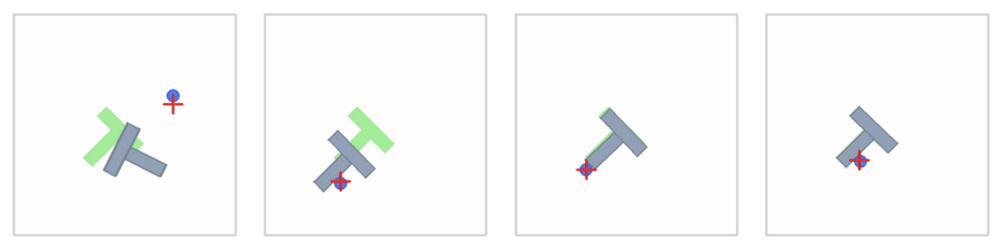
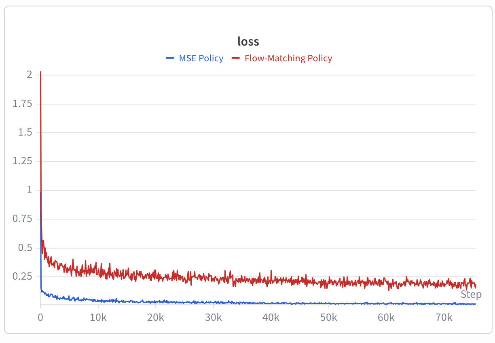
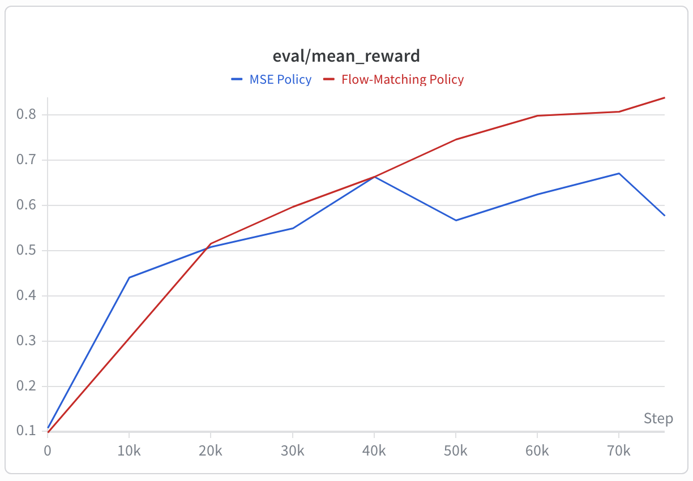

In this page, I discuss the distributional shift problem in Behavior Cloning and analyze its effects from a theoretical perspective. I also describe the implementation of the Behavior Cloning based on the code provided in CS 185/285.
Behavior Cloning
Behavior cloning trains a policy $\pi_\theta (a_t|s_t)$ using supervised learning on demonstration data $\mathcal{D}=\{s_0, a_0, \cdots, s_T, a_T \}_{i=1}^N$ to maximize the likelihood of selecting the same actions as the expert policy $\pi^* (s_t)$ under the demonstrated states $p_{\text{data}}(s_t)$.
However, during deployment, the states visited by the policy $p_{\pi_\theta}(s_t)$ differ from the demonstrated states used for training, resulting in a Distributional Shift.
Distributional Shift
For theoretically quantifying how bad distributional shift can be, we first define a cost function as follow:
$$ \begin{aligned} c(s_t, a_t) = \begin{cases} 0 & \text{if } a_t = \pi^*(s_t), \\ 1 & \text{otherwise}. \end{cases} \end{aligned} $$This means that we measure the "mistakes" of the learned policy by assigning a cost of 0 when the selected action matches the expert action and 1 otherwise. Given the state $s_t$, the expected cost at a single time step is:
$$ \begin{aligned} \mathbb{E}_{a_t\sim\pi_\theta(a_t|s_t)} \left[c(s_t,a_t)\right] = \sum_{a_t}\pi_\theta(a_t|s_t)\cdot c(s_t,a_t) = \pi_\theta(a_t\ne \pi^*(s_t)|s_t) \end{aligned} $$We assume that the probability of the learned policy making mistakes on states sampled from the training distribution $p_{\text{train}}(s_t)$ is at most $\epsilon$
To understand how policy errors propagate over time, we evaluate the total expected number of cost over a trajectory of horizon $H$.
$$ \begin{aligned} \sum_{t=1}^H \mathbb{E}_{a_t\sim \pi_\theta(a_t|s_t), s_t\sim p_{\pi_\theta}(s_t)} \left[c(s_t,a_t)\right] \end{aligned} $$Here, $s_t$ is sampled from the policy-induced distribution $p_{\pi_\theta}(s_t)$, not from the training distribution. In other words, the expected cost is measured along trajectories generated by the learned policy. In oder to derive the upper bound on the cumulative expected mistakes, we first introduce the State Distribution Decomposition and the Total Variation Divergence.
State Distribution Decomposition
To derive the upper bound on the cumulative expected mistakes, we first decompose the state distribution $p_{\pi_{\theta}}(s_t)$ induced by the learned policy. At each time step, the state distribution can be divided into two possible cases:
- The policy has not made any mistakes up to time step $t$, so the visited states still follow $p_{\text{train}}(s_t)$.
- The policy has made at least one mistake before time step $t$, causing the trajectory to move into $p_{\text{mistake}}(s_t)$.
Using these two cases, the state distribution induced by the $\pi_\theta(a_t|s_t)$ can be expressed as:
where $(1-\epsilon)^t$ represents the probability that the policy follows the expert trajectory for $t$ steps without making any mistakes.
Total Variation Divergence
Total Variation Divergence measures how different two distributions are:
By using the Total Variation Divergence, we now compute how far the $p_{\pi_\theta}$ deviates from $p_{\text{train}}$:
$$ \begin{aligned} D_{\text{TV}}(p_{\text{train}}, p_{\pi_\theta}) &= \frac{1}{2}\sum_{s_t} \left|p_{\text{train}}(s_t)-p_{\pi_\theta}(s_t)\right| \\ &= \frac{1}{2}\sum_{s_t} \left| p_{\text{train}}(s_t) -(1-\epsilon)^t p_{\text{train}}(s_t) -(1-(1-\epsilon)^t)p_{\text{mistake}}(s_t) \right| \\ &= \frac{1}{2}\sum_{s_t} \left| (1-(1-\epsilon)^t)p_{\text{train}}(s_t) -(1-(1-\epsilon)^t)p_{\text{mistake}}(s_t) \right| \\ &= (1-(1-\epsilon)^t) \frac{1}{2}\sum_{s_t} \left|p_{\text{train}}(s_t)-p_{\text{mistake}}(s_t)\right| \\ &\leq 1-(1-\epsilon)^t. \end{aligned} $$To simplify this expression, we can use the following inequality for any $\epsilon \in [0,1]$:
$$ (1-\epsilon)^t \geq 1-\epsilon t \quad\Longrightarrow\quad 1-(1-\epsilon)^t \leq \epsilon t. $$This follows from Bernoulli's inequality, which says that $(1+x)^n \geq 1+nx$, whenever $x \geq -1$. By setting $x=-\epsilon$, we get $(1-\epsilon)^t \geq 1-\epsilon t$.
Therefore, the distance between the learned policy's state distribution and the training distribution is bounded by
$$ D_{\text{TV}}(p_{\text{train}}, p_{\pi_\theta}) \leq \epsilon t. $$This shows that the distributional mismatch can grow linearly with time.
Bounding the Total Cost
We now return to the cumulative expected cost under the states generated by the learned policy. The goal is to separate the part that comes from states in $p_{\text{train}}(s_t)$ from the part caused by the shift to $p_{\pi_\theta}(s_t)$ by adding and subtracting $p_{\text{train}}(s_t)$ inside the state distribution term.
$$ \begin{aligned} &\sum_{t=1}^{H} \mathbb{E}_{s_t\sim p_{\pi_\theta}(s_t)} \left[ \mathbb{E}_{a_t\sim\pi_\theta(a_t|s_t)} [c(s_t,a_t)] \right] \\ &= \sum_{t=1}^{H} \sum_{s_t} \left(p_{\text{train}}(s_t)+p_{\pi_\theta}(s_t)-p_{\text{train}}(s_t)\right) \mathbb{E}_{a_t\sim\pi_\theta(a_t|s_t)} [c(s_t,a_t)] \\ &= \sum_{t=1}^{H} \left[ \underbrace{ \sum_{s_t} p_{\text{train}}(s_t) \mathbb{E}_{a_t\sim\pi_\theta(a_t|s_t)} [c(s_t,a_t)] }_{\text{training-distribution error}} + \underbrace{ \sum_{s_t} \left(p_{\pi_\theta}(s_t)-p_{\text{train}}(s_t)\right) \mathbb{E}_{a_t\sim\pi_\theta(a_t|s_t)} [c(s_t,a_t)] }_{\text{error from distributional shift}} \right]. \end{aligned} $$The first term is bounded by the earlier mistake-probability condition: on states sampled from the training distribution, the learned policy makes a mistake with probability at most $\epsilon$.
$$ \sum_{s_t} p_{\text{train}}(s_t) \mathbb{E}_{a_t\sim\pi_\theta(a_t|s_t)} [c(s_t,a_t)] \leq \epsilon. $$The second term measures the additional cost caused by visiting states whose distribution differs from the training data. Since $c(s_t,a_t)\in[0,1]$, this term can be bounded using Total Variation Distance.
$$ \begin{aligned} \text{Term B} &= \sum_{s_t} \left(p_{\pi_\theta}(s_t)-p_{\text{train}}(s_t)\right) \mathbb{E}_{a_t\sim\pi_\theta(a_t|s_t)} [c(s_t,a_t)] \\ &\leq \sum_{s_t} \left|p_{\pi_\theta}(s_t)-p_{\text{train}}(s_t)\right| \cdot \underbrace{ \mathbb{E}_{a_t\sim\pi_\theta(a_t|s_t)} [c(s_t,a_t)] }_{\leq 1} \\ &\leq \sum_{s_t} \left|p_{\pi_\theta}(s_t)-p_{\text{train}}(s_t)\right| \\ &= 2D_{\text{TV}}(p_{\text{train}},p_{\pi_\theta}) \\ &\leq 2\epsilon t. \end{aligned} $$Combining the training-distribution error and the error from distributional shift gives the following upper bound:
$$ \begin{aligned} \sum_{t=1}^{H} \mathbb{E}[c(s_t,a_t)] &\leq \sum_{t=1}^{H} \left(\epsilon + 2\epsilon t\right) \\ &= \epsilon H +2\epsilon\sum_{t=1}^{H}t \\ &= \epsilon H +\epsilon H(H+1) \\ &= O(\epsilon H^2). \end{aligned} $$The expected total number of mistakes scales as $\boldsymbol{O(\epsilon H^2)}$, which is quadratic in the horizon $H$.
Imitation Learning Implementation

This implementation is based on CS185/285 Homework 1, which studies imitation learning in the Push-T environment with action chunk policies. The code I implemented is available in my Homework 1 repository. The code is organized around the following five stages.
- Dataset Setup Push-T data + chunk batches
- Normalize Dataset observation/action scales
- Policy Setup MSE or flow policy
- Policy Training loss + optimizer step
- Evaluation rollout reward
Dataset Setup
The dataset setup uses the Push-T data provided by the
Diffusion Policy project. The dataset
contains three keys: states, actions, and episode_ends.
Here, episode_ends stores the indices where each trajectory ends.
Since the policies predict action chunks, a training example is not just a single
state-action pair. Instead, each sample pairs the current observation $o_t$ with the next
$K$ expert actions, written as $a_{t:t+K}$. In the code, build_valid_indices
chooses only the starting times whose full action chunk remains inside the same episode.
This prevents a batch from accidentally joining the end of one trajectory with the beginning
of another.
One dataset item returns (state, action_chunk), where
state = states[t] and action_chunk = actions[t:t+chunk_size].
Normalize Dataset
Before training, a Normalizer is built from the full dataset. It computes
feature-wise means and standard deviations for both states and
actions, then standardizes them so that each feature has approximately zero
mean and unit variance over the dataset.
PushtChunkDataset returns normalized observations and normalized action
chunks, so the policy learns to predict actions in normalized coordinates.
The policy output is first converted back to the original action scale, then the denormalized action is passed to the environment step.
Policy Setup
The implementation builds the neural network parameters $\theta$ for the action-chunk policy
$\pi_\theta(A_t \mid o_t)$. In this implementation, behavior cloning is trained with two
policy structures: a basic MSE policy and a flow matching policy. Both policies
use an MLP-style backbone with hidden_dims=(256, 256, 256) and ReLU activations.
Activation function Linear layer
Activation function Linear layer
Activation function output
Takes the normalized observation as input and outputs a flattened action chunk with
dimension chunk_size * action_dim.
Takes the normalized observation, a noisy action chunk, and a time value as input, then outputs a vector field with the same dimension as the action chunk.
Policy Training
1. MSE Policy
The MSE policy predicts the entire action chunk in a single forward pass. Given a batch of paired observations and expert chunks $(o_t^{(j)}, A_t^{(j)})$, the policy is trained to minimize the squared error between the expert chunk and the predicted chunk.
In the code, action_chunk is reshaped from
(B, K, action_dim) to (B, K * action_dim). The MLP output is
compared against this flattened expert chunk using torch.nn.functional.mse_loss.
2. Flow Matching Policy
The flow matching policy does not directly predict the expert action chunk. Instead, it learns a vector field that moves a noisy action chunk toward the expert chunk. For each expert chunk $A_t^{(j)}$, the code samples noise $A_{t,0}^{(j)} \sim \mathcal{N}(0,I)$ and a timestep $\tau^{(j)} \sim \mathcal{U}(0,1)$, then constructs an interpolated action chunk.
The target velocity is the direction from the noise sample to the expert action chunk, $A_t^{(j)}-A_{t,0}^{(j)}$. The network receives the observation, interpolated chunk, and timestep, then predicts this velocity.
In compute_loss, this corresponds to sampling x_0 and
t, forming x_t = (1 - t) * x_0 + t * x_1, and training the MLP
to match vel = x_1 - x_0. For a more detailed explanation of flow matching,
see the Flow Q-Learning note.
Evaluation
During rollout, the learned policy is queried through sample_actions, which
returns an action chunk $A_t=(a_t,\ldots,a_{t+K-1})$. The predicted chunk is denormalized
and executed open-loop in the Push-T environment.
1. MSE Policy
For the MSE policy, sample_actions performs a single forward pass through the
MLP. The flattened output is reshaped into (batch, chunk_size, action_dim) and
used as the predicted action chunk.
2. Flow Matching Policy
For the flow matching policy, sample_actions starts from Gaussian noise and
repeatedly updates the action chunk using the learned vector field. With num_steps
integration steps, the implementation uses Euler integration from $\tau=0$ to $\tau=1$.
After the final integration step, the generated chunk is reshaped into
(batch, chunk_size, action_dim). The evaluator then executes the actions in
the environment and logs rollout reward and videos.
Results
The training curves show an important difference between supervised prediction loss and rollout performance. The MSE policy reaches a lower training loss than the flow matching policy, but its mean reward is worse. This suggests that a lower imitation loss on expert action chunks does not necessarily translate into better closed-loop behavior in the environment.


The rollout videos show why this gap appears. In this task, the expert behavior is multimodal: from similar observations, valid demonstrations can move in different directions. The MSE policy collapses these alternatives toward their average, so it fails to commit to either direction and can get stuck instead of executing a coherent motion. Flow matching models a more expressive continuous action distribution, allowing the policy to represent the multimodal behavior and sample consistent action chunks that produce successful rollout behavior.